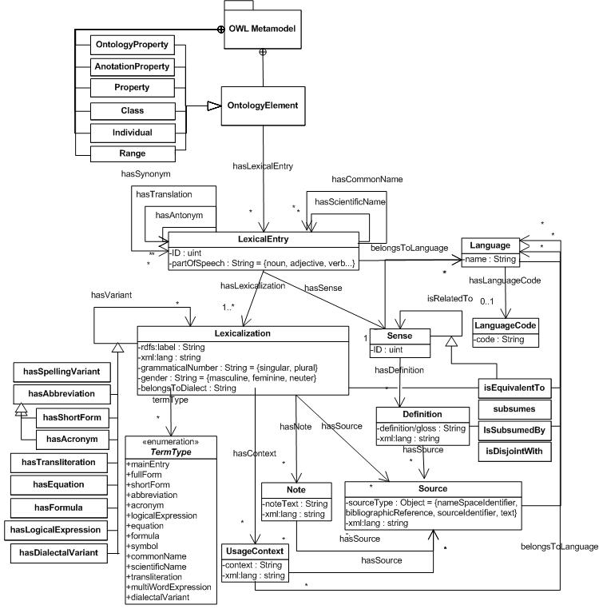
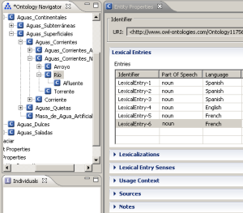
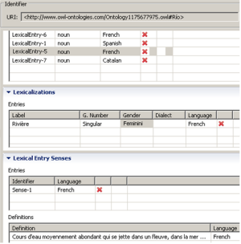

")
")
LIR - Linguistic Information Repository
The LIR is a linguistic proprietary model expected to be published and used with domain ontologies. In itself, it has been implemented as an ontology in OWL. The LIR covers a subset of lexical and terminological description elements that account for the linguistic realization of a domain ontology in different natural languages. Thus, its main purpose is to associate multilingual information to ontologies with the aim of contributing to the Ontology Localization Activity.

Figure 1. UML diagram of the LIR model
The lexical and terminological information captured in the LIR is organized around the LexicalEntry class, as shown in Figure 1. LexicalEntry is considered a union of word forms (Lexicalization) and meaning (Sense). This ground structure has been inspired by the Lexical Markup Framework (LMF) ISO standard . The compliance with this standard is important for two main reasons: (a) links to lexicons modeled according to this standard can be established, and (b) the LIR can be flexibly extended with modular extensions of the LMF modeling specific linguistic aspects, such as deep morphology or syntax, not dealt by LIR in its present stage.
The rest of the classes that make up the LIR are Language, Definition, Source, Note and UsageContext. These can be linked to the Lexicalization and Sense classes. Each lexicalization is associated to one sense. The Sense class represents the meaning of the ontology concept in a given language. It has been modeled as an empty class in order to guarantee interoperability with other standards and to point to external resources that describe that sense. The meaning of the concept in a certain language (which may not completely overlap with the formal description of the concept in the ontology) is "materialized" in the Definition class, i.e., is expressed in natural language. The UsageContext gives us information about how a word behaves syntactically in a certain language by means of illustrative examples. Source information can be attached to any class in the model to keep track of the provenance of the information. Finally, the Note class has been meant to include any information about language specificities, connotations, style, register, etc. By determining the Language of a LexicalEntry, we can ask the system to display only the linguistic information associated to the ontology belonging to a given language.
The current version of the LIR is supported by the LabelTranslator system, a plugin of the NeOn Toolkit. As soon as an ontology is imported in the NeOn Toolkit, the whole set of classes captured in the LIR is automatically associated to each Ontology Element, specifically, to ontology classes and properties, by means of the relation hasLexicalEntry. In this way, the rest of linguistic classes organized around the LexicalEntry class are linked to an ontology element.
Figure 2 shows a snapshot of hydrOntology, an ontology of the Hydrographical domain, and the multilingual linguistic information associated to its classes. In this example, the class Río has 6 lexical entries associated to it in different natural languages.

Figure 2. Snapshot of the Rio class in hydrOntology and its related LexicalEntries

Figure 3. Lexicalization, Lexical Entry Senses and Definitions belonging to LexicalEntry-5
The LabelTranslator NeOn Toolkit plugin has been created for automating the process of Ontology Localization. Ontology Localization consists in adapting an ontology to the needs of a concrete linguistic and cultural community , as defined in the NeOn Glossary. Currently, the languages supported by the plug-in are Spanish, English and German. Once translations are obtained for the labels of the original ontology, they are stored in the LIR model. However, if the system does not support the language combination we are interested in, we can still use it to take advantage of the LIR API implemented in the NeOn Toolkit. In this sense, we can manually introduce the linguistic information necessary for our purposes.
The NeOn Toolkit can be downloaded from www.neon-toolkit.org. Once installed, you need to execute it and follow the instructions to use the LabelTranslator plugin.
To install the LabelTranslator plugin, you need to follow the actions listed below: Select "NeOn Toolkit Update Site" and click Finish. The update site will be checked for new functionalities. A list of available plug-ins will be displayed organized by Topics. LabelTranslator is displayed under "Development" category. Select LabelTranslator and click Next:
- Open Neon Toolkit.
- In the Help menu click "Software Updates" --> "Find and Install".
- An Install/Update window will appear.
- If the plugin has been installed before, click: "Search for update"
- If that is not the case, choose: "Search for new features"
- Select "Neon Toolkit Update Site" and click Finish
- Select "LabelTranslator" under "Development", and click next
- Select "Agree" in the license agreement
- Select "Finish" in the installing window

Created under Creative Commons License - 2015 OEG.